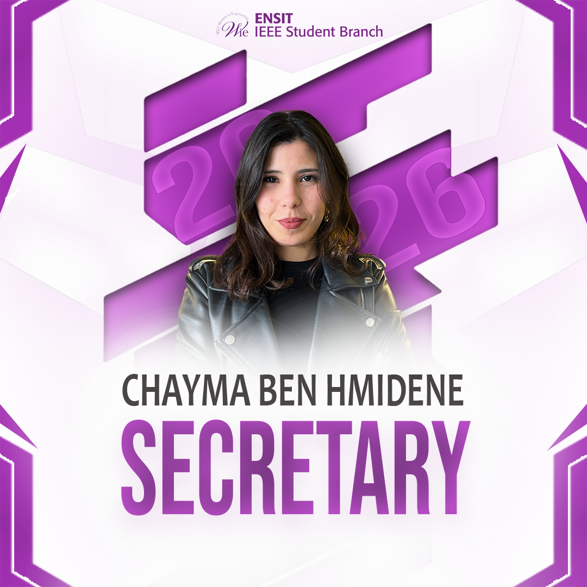
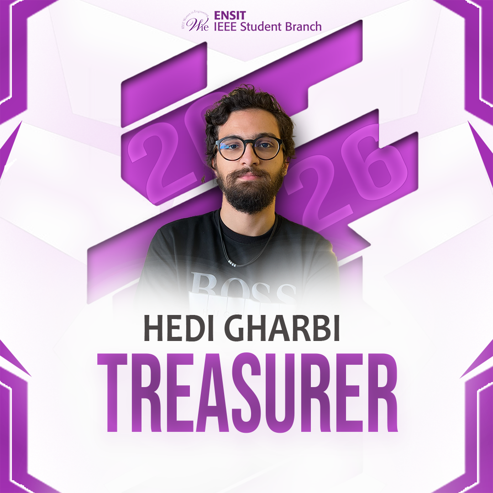
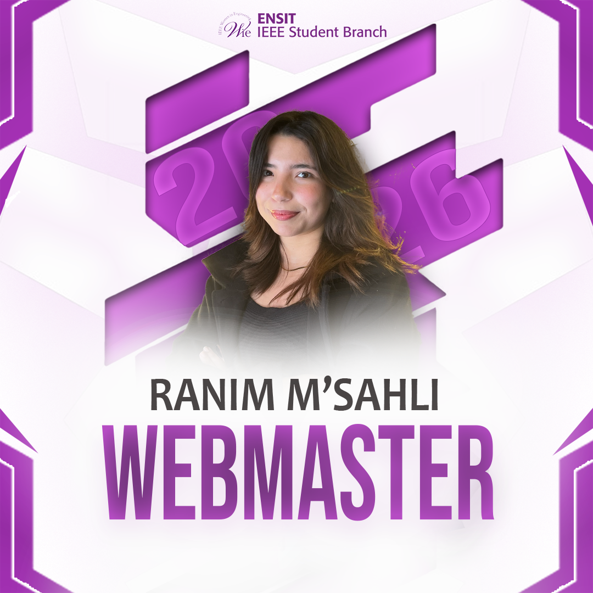
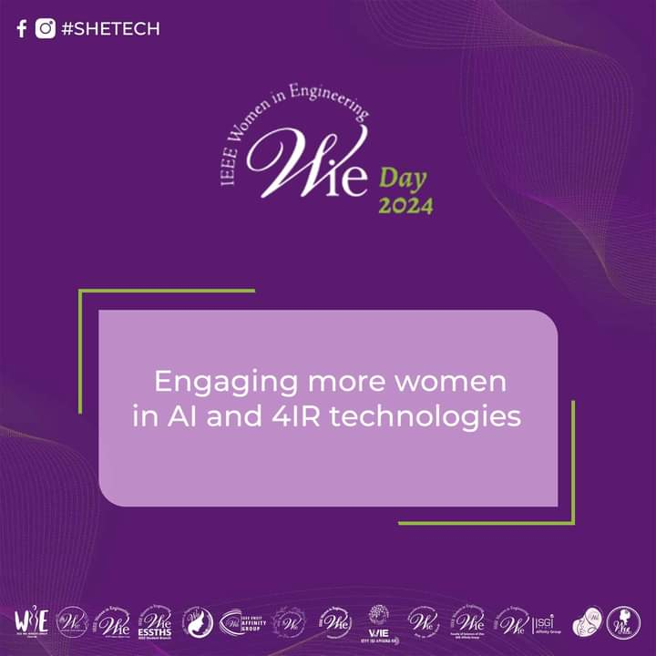
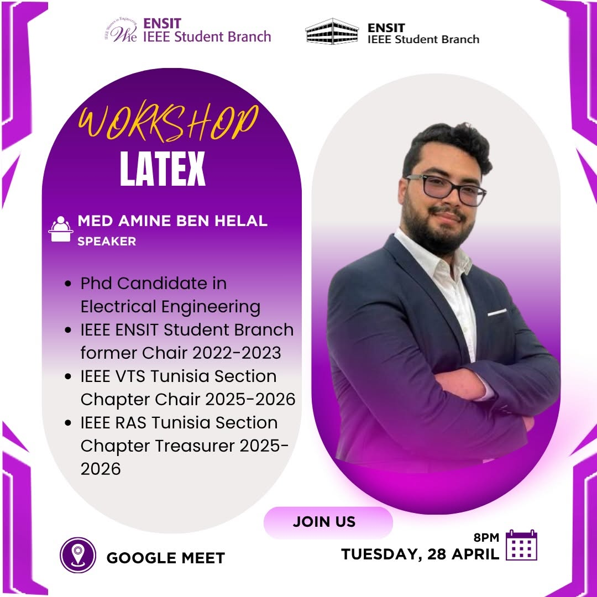

Mentoring & networking
Connect students, early-career professionals, and industry experts through local affinity groups and conferences.
 IEEE ENSIT
IEEE ENSIT
IEEE ENSIT / Chapter
Women in Engineering
WIE ENSIT is a community that supports women in engineering and STEM through mentorship, learning, leadership, and meaningful connections.
Discover WIEEngineering moves
forward when
every voice
is heard.
Supporting women in STEM through mentorship, outreach, and opportunity.
A community with purpose
IEEE Women in Engineering (WIE) is the global IEEE network dedicated to promoting, recruiting, and retaining women in engineering and STEM. Participation is open to people of all genders and backgrounds who support a more inclusive technical community.
At ENSIT, WIE brings students together through mentoring, learning, outreach, and professional connections, helping turn ambition into action.
Our mission in action
Connect students, early-career professionals, and industry experts through local affinity groups and conferences.
Programs such as IEEE STAR encourage school-age students to explore science, technology, and engineering.
Find workshops, webinars, hackathons, and scholarship opportunities through IEEE WIE and its partners.
Explore international opportunities such as the WIE International Leadership Conference (ILC) and International Leadership Summit (ILS).
Global network, local communities
In Tunisia, WIE activities take place through the IEEE Tunisia Section and university student groups. Examples include IEEE WIE Sup'Com and the WIE ACT congress organized by ENICarthage.
For current events and ways to participate, check the groups' official channels or get in touch with WIE ENSIT.
The people behind the community





Learn, connect, make a difference
From STEM outreach to technical workshops, our events create opportunities to learn together and celebrate every path into engineering.

Empowering women in STEM through connection and inspiration.
Read more →
Discovering technology, skills, and opportunities together.
Read more →
Building bridges between students, technology, and the future.
Read more →
Introducing students to artificial intelligence through curiosity, creativity, and hands-on discovery.
Read more →
Learning to create clean, professional, and beautifully structured documents.
Read more →